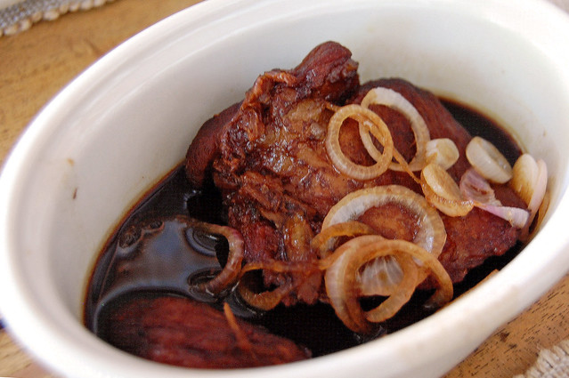
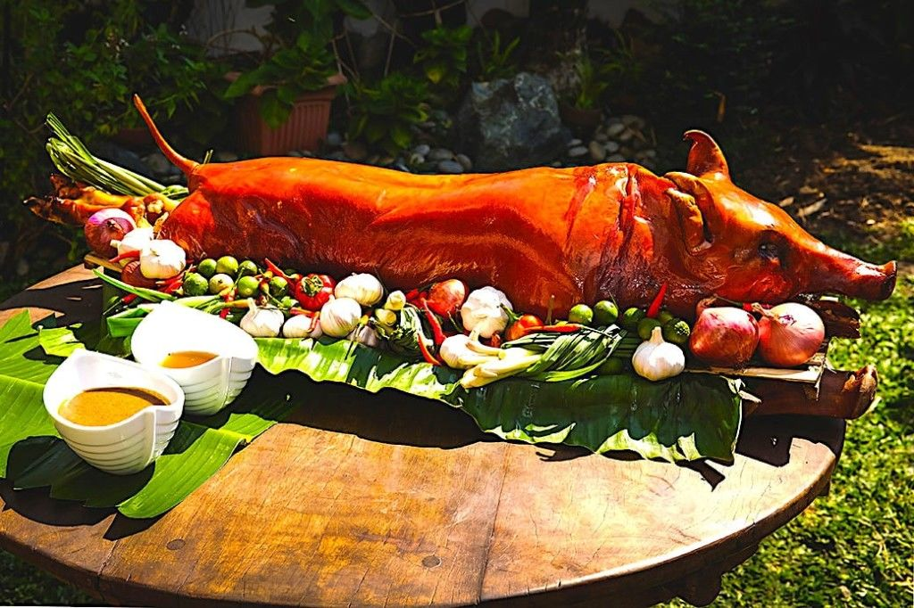
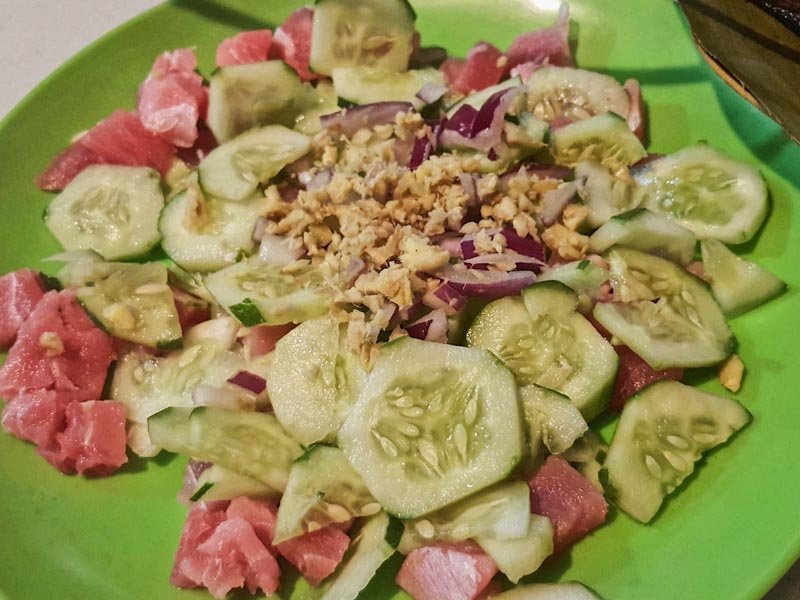
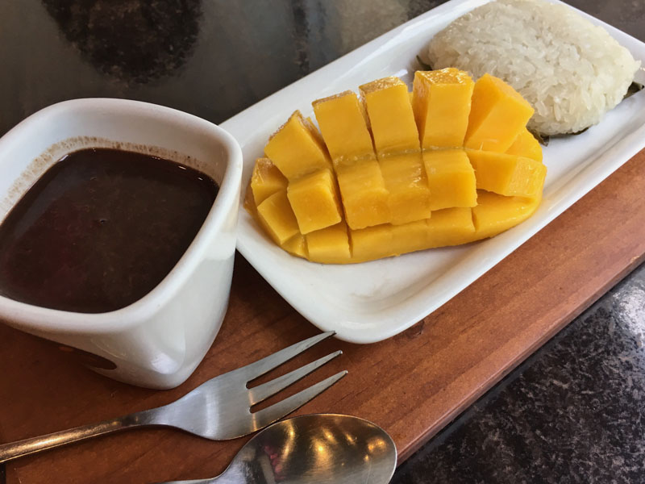

-

Humba
Made with pork belly cuts cooked in a combo of brown sugar and vinegar sauce, this is certainly another local favorite. You can rarely find a carenderia or a celebration without this dish in the mix. It's also quite addictive. I have a suspicion that for locals, it may be second only to Talisay lechon in epicurean popularity. Personally, I love the ones in which they include whole boiled eggs, along with the pork belly cuts.
-

Lechon de Cebu
is a young pig stuffed with a secret mix of herbs and spices (usually including star anise, spring onions, lemongrass), skewered on a bamboo pole and roasted whole over hot coals.
-

SuTuKil
One must-try is the kinilaw, the local version of sashimi! The best part is that since they are cooked by locals, these dishes will not be commercialized, and tourists are able to taste the best of what Cebuano cooking has to offer. Read more: https://sethlui.com/top-cebu-foods-philippines/#ixzz7EZUsESaT
-

Puto Maya & Sikwate
A popular breakfast in the region, Puto Maya is made from glutinous rice mixed with ginger and coconut. This is usually paired with “Tablea”, concentrated cacao with added sugar and the famous Cebu mango.
-

Puso Rice
Rice cannot get any more portable than this. More commonly known as “hanging rice”, Puso rice is boiled and wrapped in coconut leaves, and you will most likely notice them hanging in batches in local eateries.